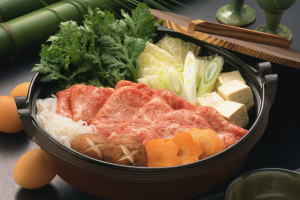

Sukiyaki

Sukiyaki (すき焼き) is a popular Japanese hot pot dish that we often prepare and serve at the table. We slowly grill or simmer well-marbled beef, alongside vegetables, tofu, and mushrooms in a shallow cast-iron pot. The soup broth is rich and bursting with sweet, salty, and savory flavor.
Interestingly, the Kanto region once called their version of sukiyaki gyunabe (牛鍋). Gyunabe’s popularity spread from Yokohama, where many foreigners lived, and then became popular in Tokyo. Gyunabe then influenced the sukiyaki culture in the Kanto region.
Ingredients
- Dashi
- Soy sauce
- Sake
- Sugar
- vegetable oil
- Beef
- Mushrooms
- Tofu
- Shirataki noodles
- Napa cabbage
- Chrysanthemum greens
- Onion
- Tokyo negi
- Carrot
- Burdock root
Steps
- Combine the dashi, soy sauce, sake, and sugar. Mix to dissolve the sugar. Set aside.
- Prep all the sukiyaki ingredients and set aside.
- Warm pan over medium heat and add oil, then add beef slices. Brown the beef then gather to one side of the pan.
- Arrange the onions, cabbage, green onions, mushrooms, tofu, and noodles into neat clusters in the pan.
- Add the sukiyaki broth, then simmer for 10 minutes.
- Add the chrysanthemum greens on top of everything, then cook for 1 minute more.
- Serve in the pot you cooked it in.
Back